4 Object Detection Algorithms
4.1 SSD: Single Shot MultiBox Detector
The single shot multibox detector is an algorithm presented by W. Liu (2016) for the purpose of taking a 300 x 300 input and generating bounding boxes on objects of interest within the image. The paper is linked here
4.2 A Comprehensive Review of YOLO (v1 to v8+)
J. Terven (2023) present review and analysis of the evolution of the Yolo algorithm, with a focus on the innovations and contributions made by each iteration, as well as the major changes in network architecture (and training tricks) which have been implemented over time.
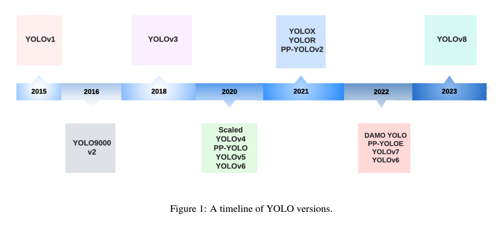
4.2.1 Applications of YOLO
Yolo has proven invaluable for a number of different applications
- autonomous vehicles
- enables quick identification and tracking of objects like vehicles, pedestrians, bicycles and other obstacles
- action recognition
- video surveillance
- sports analysis
- human-computer interaction
- crop, disease, pest detection and classsification
- face detection - biometrics, security, facial recognition
- cancer detection
- skin segmentation
- pill identification
- remote sensing
- satellite and aerial imagery object detection / classification
- land use mapping
- urban planning
- security systems
- smart transportation systems
- robotics and drones
4.2.2 Evaluation Metrics
Average Precision (AP) and Mean Average Precision (mAP) are the most common metrics used in the object detection task. It measures average precision across all categories, providing a single value to compare different models
4.2.2.1 How AP works
- mAP is the average precision for accuracy of predictions across all classes of objects contained within an image
- individual AP values are determined for each category separately.
- IOU (intersection over union)
- measures the proportion of the predicted bounding box which overlaps which overlaps with the true bounding box
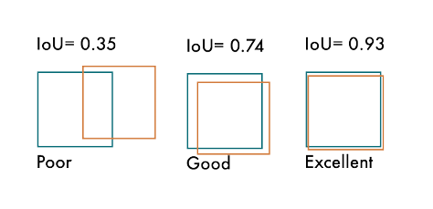
Different methods are used to compute AP when evaluating object detection methods on the COCO and VOC datasets (PASCAL-VOC)
4.2.3 Non-Maximum Suppression
A post-processing technique - reduces number of overlapping boxes and improves detection quality. Object detectors typically generate multiple bounding boxes around the same object. Non-max suppression picks the best ones and gets rid of the others.
The algorithm for this is defined below:
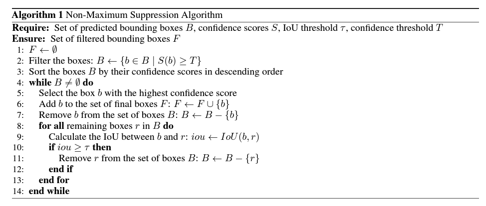
A useful visualization is also provided:
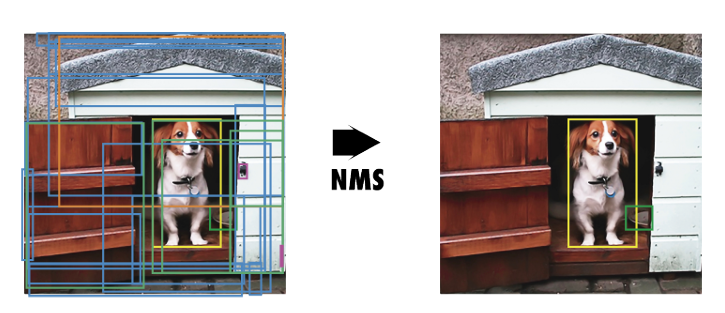
4.2.4 YOLO
The original authors of YOLO titled it as such for the reason that it only required a single pass on the image to accomplish the detection task. This is contrast to the other approaches used by Fast R-CNN and sliding window methods.
The output coordinates of the bounding box were detected using more straightforward regression techniques
4.2.4.1 YOLOv1
PASCAL-VOC AP: 63.4%
YOLOv1 predicted all bounding boxes simultaneously by the following process:
- divide image into \(S \times S\) grid
- predict \(B\) bounding boxes of the same class and confidence for \(C\) different classes per grid element
- each bounding box had five values:
- \(Pc\) - confidence score for the bounding box - how likely it contains an object and the accuracy of the box
- \(bx\) and \(by\) - coordinates of center of box relative to grid cell.
- \(bh\) and \(bw\) - height and width of box relative to full
- output an \(S \times S \times (B \times 5 + C)\) tensor
- (optional) NMS used to remove redundant bounding boxes
Here is an example of that output:
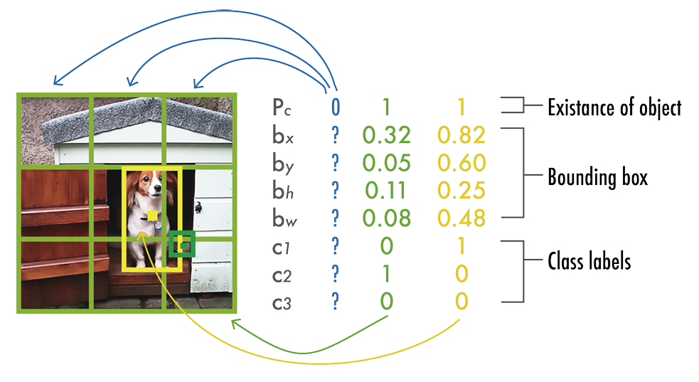
4.2.4.1.1 v1 Architecture
Normal Architecture
- 24 conv layers
- \(1 \times 1\) conv layers are used - reduce number of feature maps and keep parameters lower
- leaky rectified linear unit activations
- 2 fc layers
- predict bounding box coordinates / probs
- linear activation function for final layer
FastYOLO
- Used 9 conv layers instead of 24 for greater speed (at the cost of reduced accuracy)
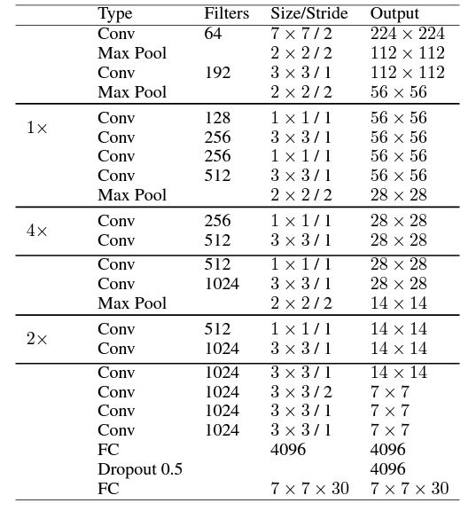
4.2.4.1.2 v1 Training
Basic training process:
- pretrain first 20 layers at resolution \(224 \times 224\) with ImageNet dataset
- add last four layers with randomly initialized weights - fine tune model with PASCAL VOC 2007 and PASCAL VOC 2012 at resolution \(448 \times 448\)
Loss functions:
- scaling factors
- \(\lambda_{coord} = 5\) - gives more weight to boxes with objects
- \(\lambda_{noobj} = 0.5\) - reduces importance of boxes with no object
- localization loss:
- first two terms
- computes error in predicted bounding box locations \((x,y)\) and \((w,h)\)
- only penalizes boxes with objects in them
- confidence loss:
- confidence error when object is detected (third term)
- confidence error when no object is in box (fourth term)
- classification loss:
- squared error of class conditional probabilities for each class if an object appears in the cell
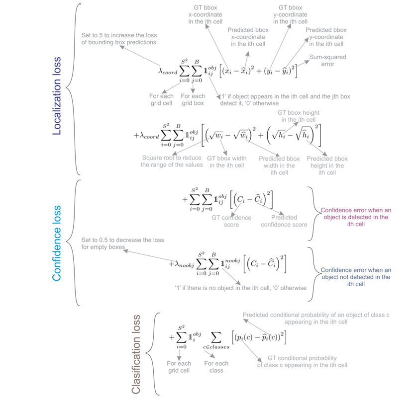
4.2.4.2 YOLOv2 (YOLO 9000)
PASCAL-VOC AP: 78.6%
Improvements / Changes
- Batch normalization - included on all convolutional layers
- Higher resolution classifier - pretrained model (224 x 224) and then fine-tuned with ImageNet at a higher reoslution (448 x 448) for ten epochs
- fully convolutional - remove dense layers and use fully conv architecture
- use anchor boxes to predict bounding boxes
- anchor box - box with predefined shapes for prototypical objects
- defined for each grid cell
- system predicts coordinates and class for every anchor box
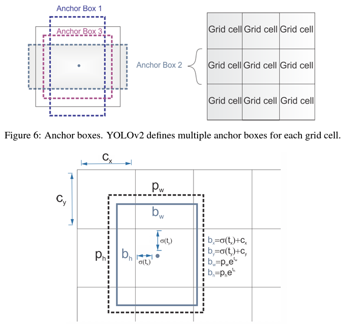
- Dimension clusters - pick good anchor boxes using k-means clustering on the training bounding boxes - improves accuracy of bounding boxes
- Direct Location Prediction
- Finer-grained features
- removed pooling layer - get feature 13 x 13 feature map for 416 x 416 images
- passthrough layer - 26 x 26 x 512 feature map -> stack adjacent features into different channels
- Multi-scale training - train on different input sizes to make model robust to different input types
4.2.4.2.1 v2 Architecture
- backbone architecture -> Darknet-19
- 19 conv layers
- 5 max pool layers
- non-linear operation - uses OT to perform efficiently
- use \(1 \times 1\) conv between \(3 \times 3\) to reduce parameters
- batch normalization to help convergence
- object classification head (replaces last 4 conv layers of YOLOv1)
- 1 conv layer (1000 filters)
- GAP layer
- Softmax classifier
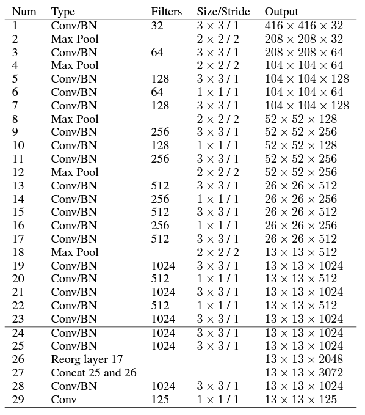
4.2.4.3 YOLOv3
MS COCO AP: 36.2% AP(50): 60.6%
The code used to run YOLOv3 in Torch is provided at this repository
4.2.4.3.1 YOLOv3 Architecture
YOLOv3 makes use of a larger network architecture (backbone) called Darknet-53.
- replaces all max-pooling layers with strided convolutions and added residual connections (what are residual connections?) - see Chapter 3 for more information on this primitive.
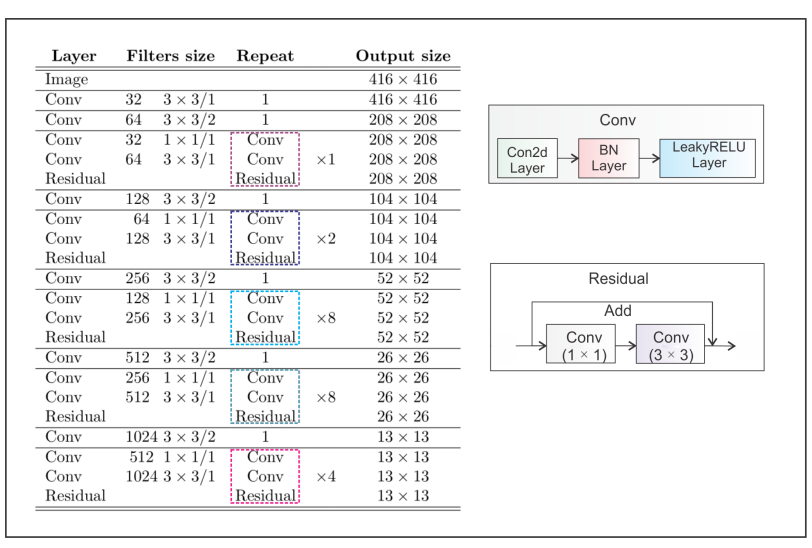
The darknet architecture is presented here as well (visually):
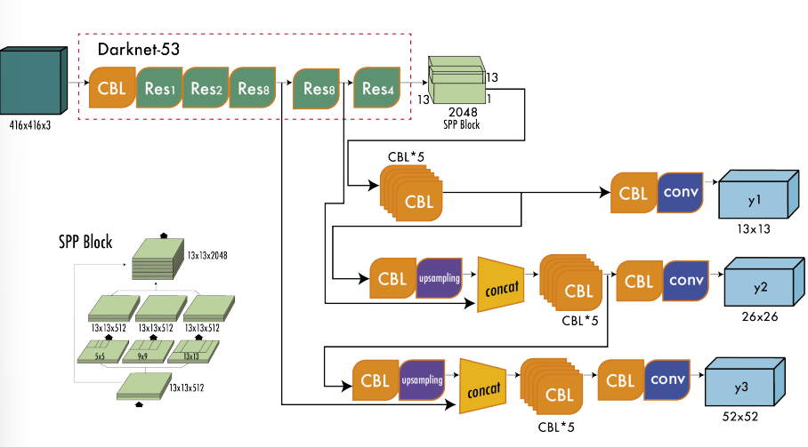
4.2.4.3.2 Multi-Scale predictions
- enables multi-scale predictions (predictions at multiple grid sizes)
- this helps to obtain finer detailed boxes (improves prediction of smaller boxes)
- YOLOv3 generates three separate outputs:
- y1: \(13 \times 13\) grid defines the output
- y2: concatenating output after \((Res \times 4)\) with output of \((Res \times 8)\) - upsampling occurs from y1 since the feature maps are of different sizes \((13 \times 13)\) and \((26 \times 26)\)
- y3: upsample y2 output to match \(52\times 52\) feature maps
4.2.4.3.3 Backbone, Neck, and Head
After release of YOLOv3, object detectors began to be described in terms of the backbone, neck, and head
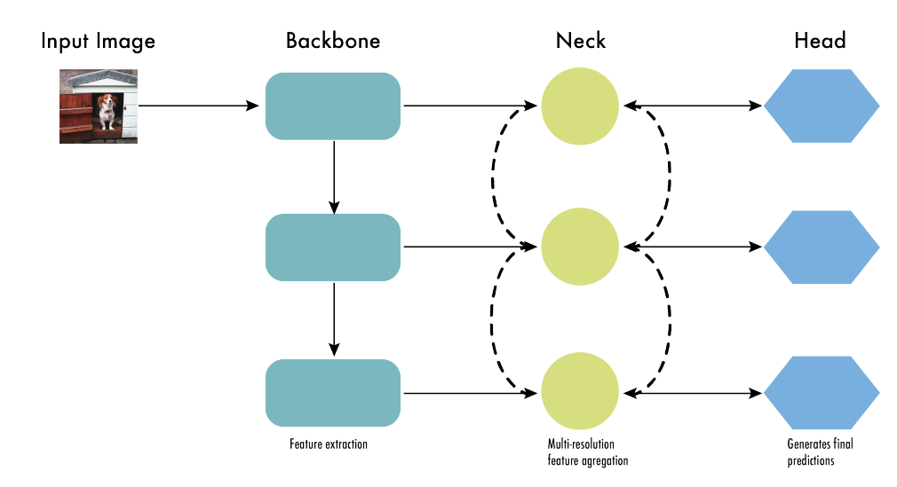
Backbone
- Extracts useful features from the input image.
- A convolutional nerual network trained on large-scale image classifications task (ImageNet)
- captures hierarchical features at different scales
- low-level features - earlier layers
- high-level features - deeper layers
Neck
- aggregates / refines features extracted by backbone
- enhance spatial / semantic information across different scales
- includes conv layers
- includes feature pyramid networks
Head
- makes predictions based on features provided by backbone and neck
- consists of task-specific subnetworks to perform classification, localization, localization, instance segmentation and pose estimation
- non-maximum supression filters out overlapping predictions (retains only most confident detections)
4.2.4.4 YOLOv4
MS COCO AP: 43.5% AP(50): 65.7%
The philosophy of YOLOv4 approaches optimization of the model into two categories: bag of freebies and bag of specials
Bag of Freebies:
- increase training time / cost
- do not affect inference time
- examples include data augmentation
Bag of Specials:
- increase inference time / cost
- improve accuracy of the model (MaP)
- examples include
- enlarging receptive field ???
- combining features ???
- post-processing ???
4.2.4.4.1 Model Improvements
- Enhanced network architecture with Bag-of-Specials
- backbone: Darknet-53 + Cross-stage Partial Connections (CSPNet) ?? + Mish Activation Function ??
- tested several backbone architectures to choose best option
- CSP reduces computation while maintaining accuracy
- neck: Spatial Pyramid Pooling (SPP)?? + Multi-scale predictions + modified path aggregation network PANet + modified spatial attention module (SAM)
- SPP increases receptive field without affecting inference speed
- detection head: Same anchors as YOLOv3
- backbone: Darknet-53 + Cross-stage Partial Connections (CSPNet) ?? + Mish Activation Function ??
- Advanced training with Bag-of-Freebies
- regular augmentation
- random brightness, contrast, scaling, cropping, flipping, rotation
- special
- mosaic augmentation:
- combines four images into a single one
- reduces need for large mini-batches for batch normalization
- DropBlock regularization (instead of Dropout)
- CIoU loss and Cross mini-batch nomralization CmBN for collecting statistics from the entire batch instead of just mini-batches
- these changes improve the detector
- mosaic augmentation:
- regular augmentation
- Self-adversarial Training
- improves model robustness to perturbations
- Hyperparameter optimization with Genetic Algorithms
- genetic algs used on first 10% of periods
- cosine annealing scheduler to alter learning rate during training
4.2.4.4.2 YOLOv4 Architecture
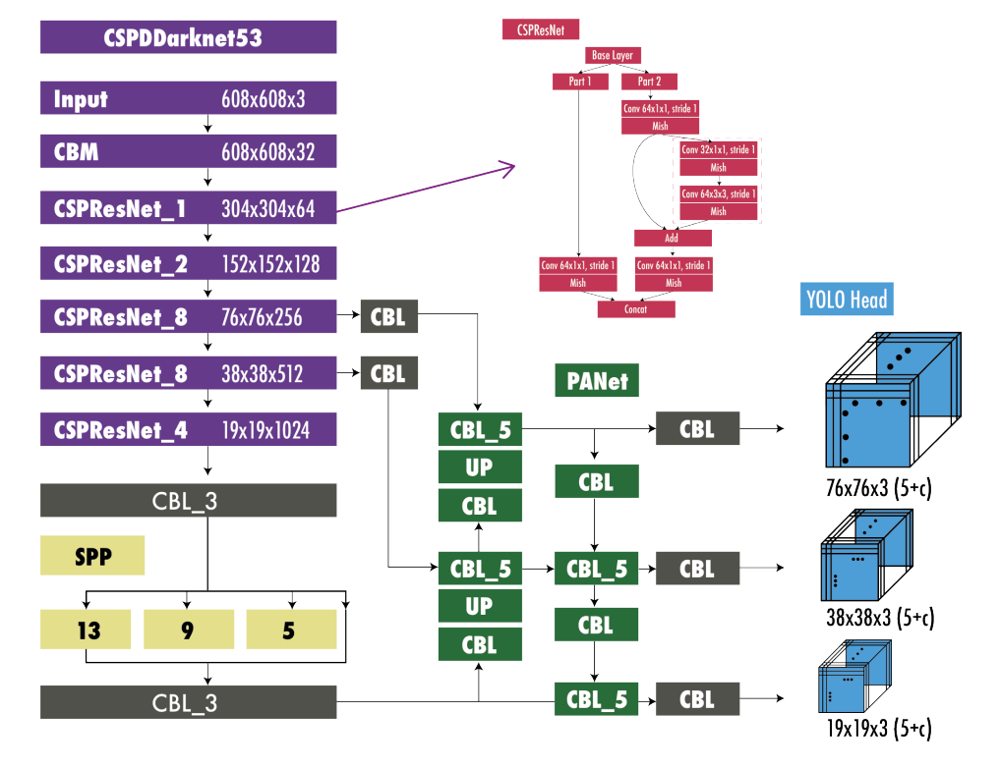